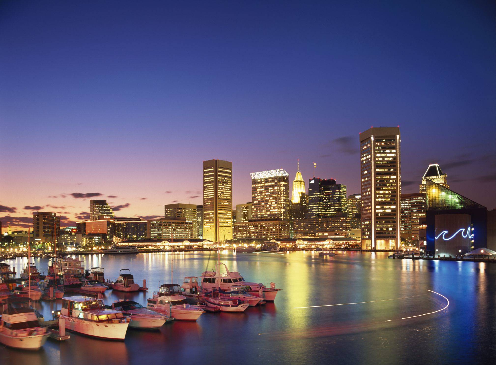
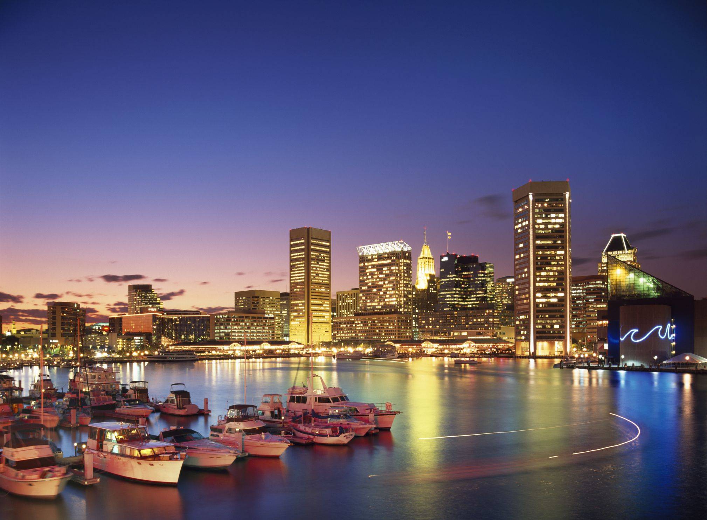

Baltimore City
Baltimore, city, north-central Maryland, U.S., about 40 miles (65 km) northeast of Washington, D.C. It lies at the head of the Patapsco River estuary, 15 miles (25 km) above Chesapeake Bay. Baltimore is Maryland’s largest city and economic centre and constitutes the northeastern hub of the Baltimore-Washington metropolitan area. The city, separated from Baltimore county in 1851, is the only city in Maryland not located within a county.

History
Baltimore was established in 1729 and named for the Irish barony of Baltimore. It was created as a port for shipping tobacco and grain, and soon local waterways were being harnessed for flour milling. At the outbreak of the American Revolution, it was a bustling seaport and shipbuilding centre. Baltimore clippers plied the seas, and trade extended to the Caribbean. The U.S. Navy’s first ship, the Constellation, was launched in Baltimore in 1797, and its namesake, the last all-sail warship built (1854) for the navy, has been moored in the city’s harbour since 1955; in the late 1990s the ship underwent extensive restoration.
 
